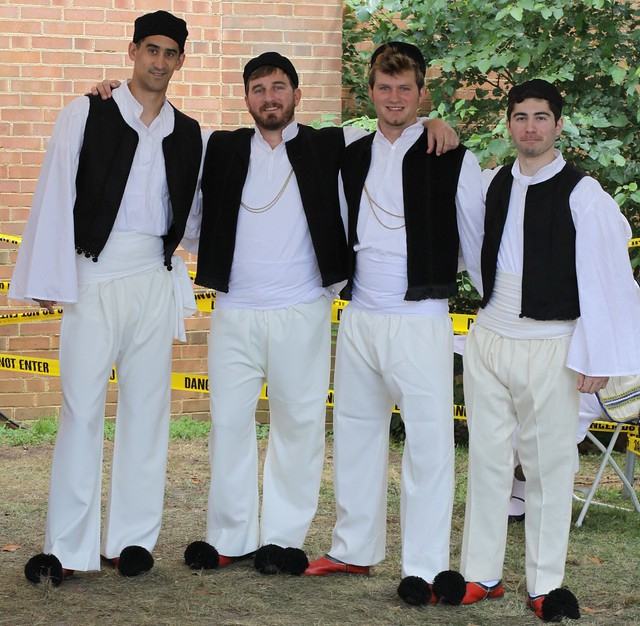
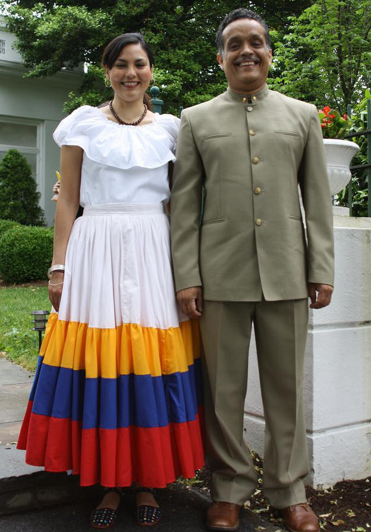
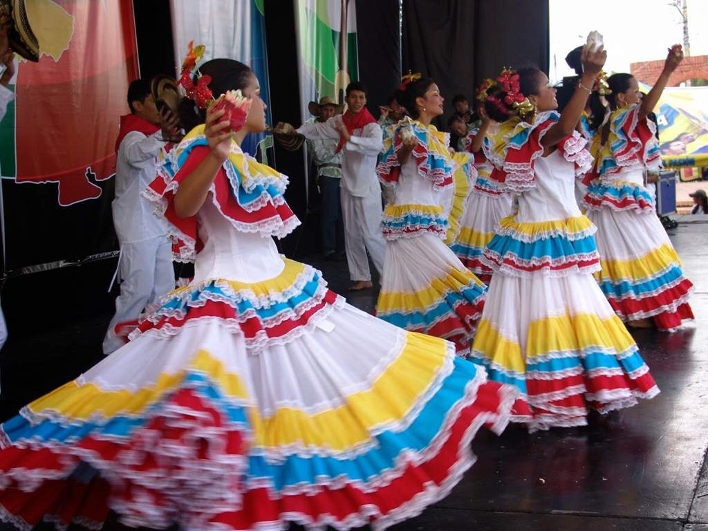
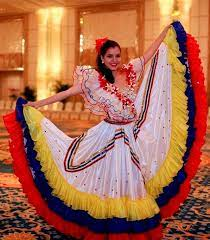
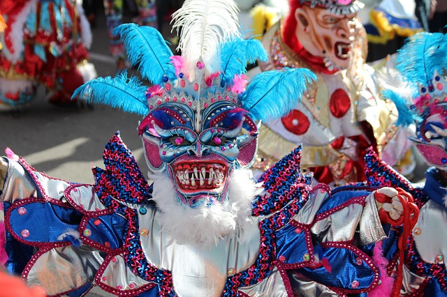
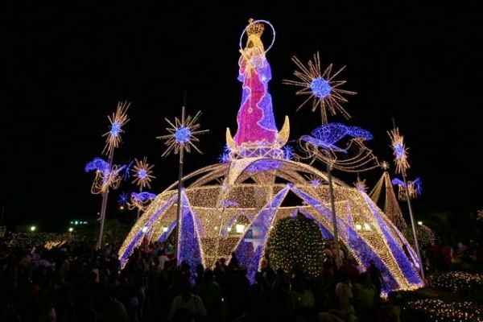
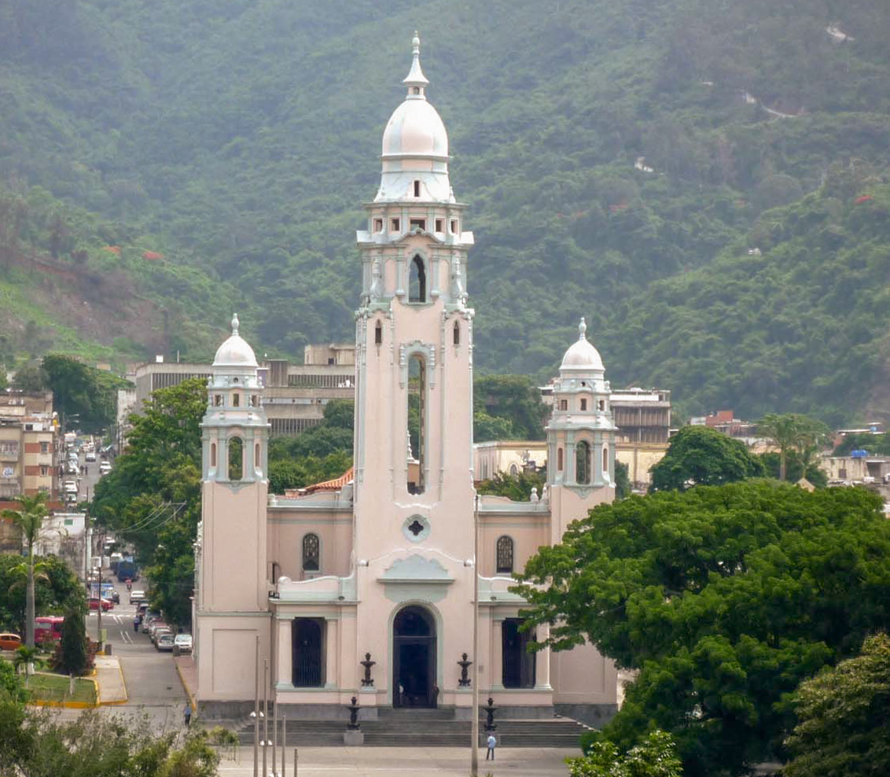
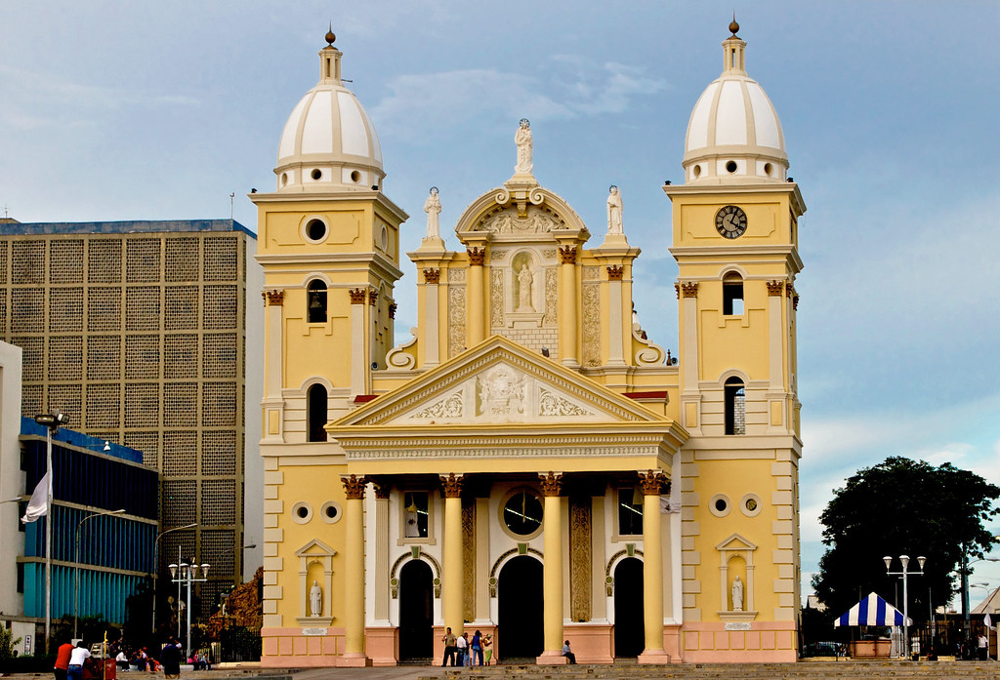
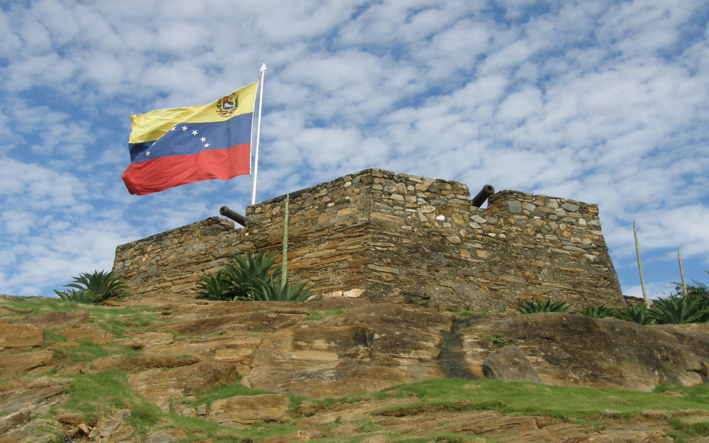
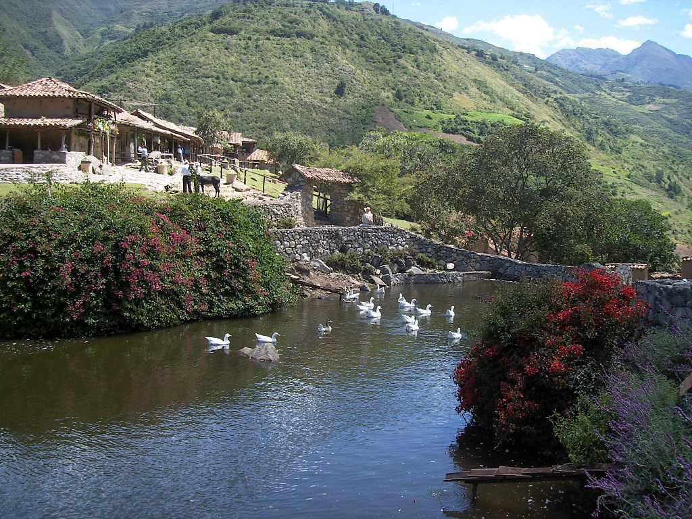

| Quick Facts | Home | Pictures | Information |
| FAMOUSE FOOD | |||
 |
 |
||
| Tequeño | Arepas | Pan de Jamon | Chachapa |
| TRADITIONAL CLOTHING | |||
|  |  |  |  |
| Liqui liqui for men, flowing ruffled dresses and floral decorations for women | |||
| FESTIVALS | ||
|  |  |
 |
| Carúpano Carnaval | Feria De La Chinita | Dancing Devils of Yare |
| NATURE | |||
.jpg) |
.jpg) |
.jpg) |
|
| Mount Roraima | Angel Falls | Gran Sabana | Canaima National Park |
| HISTORICAL PLACES | |||
|  |  |  |  |
| panteón nacional | La Chiquinquirá Church | Fortin de la Galera | Los Aleros |